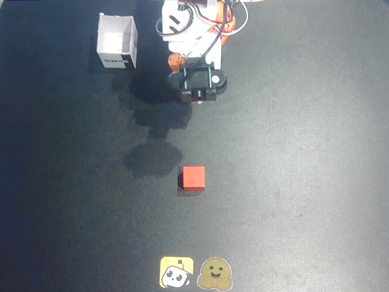
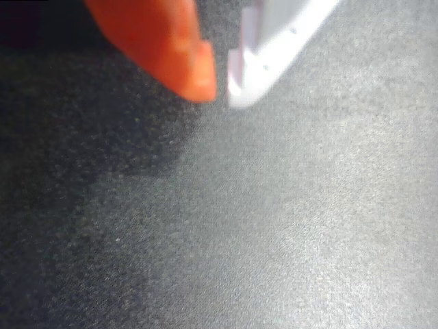

Top camera + wrist camera · 6 measured joint values
Dataset: lerobot/svla_so100_pickplace, episode 0 / first frame.This is a base checkpoint, not fine-tuned on this specific task. Valid model inference does NOT prove robot task success. Predicted joint commands are shown, never sent to hardware.
Live planner loop · Weights · Paper6 output dimensions × 50 future steps; dataset-statistics postprocessor applied. These predictions are not validated hardware commands.